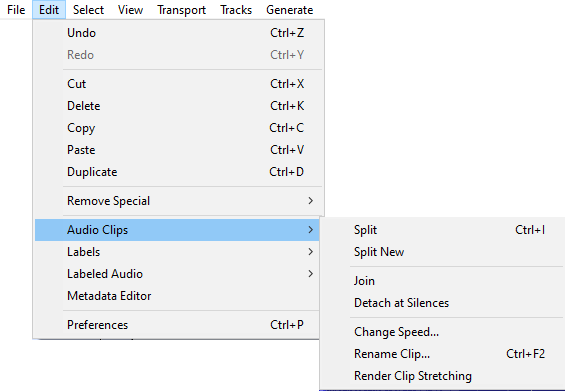
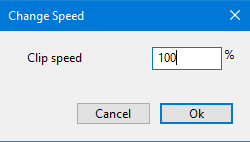
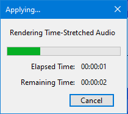

Edit Menu: Audio Clips
Note that when you split a clip each of the new sub-clips contains all of the audio that the parent clip had but with hidden audio data that you can expand out if required.
For more details on the use and management of clips please see Audacity Tracks and Clips
- 
Split Ctrl + I
Splits the current clip into up to three clips at the selection boundaries. The audio before, within, and after the selection can now all be shifted independently


Split New Ctrl+ Alt + I Extra
Does a Split Cut on the current selection in the current track, then creates a new track and pastes the selection into the new track.

Join Ctrl + J Extra
If you select an area that overlaps one or more clips, they are all joined into one large clip. Regions in-between clips become silence.


Detach at Silences Ctrl + Alt + J Extra
In a selection region that includes absolute silence and other audio, creates individual non-silent clips between the regions of silence. The silence in the selection becomes blank space between the clips.


If the selection is entirely silence, it becomes blank space between the audio either side of the selection.
Time-stretching - changing clip speed
Use this function to change the speed of a selected clip. Note that the whole clip must be selected for this command to be operable, an entire clip can be selected by left-clicking anywhere in its waveform.
Selecting this command will cause the following dialog to be displayed. You can enter any % speed change by typing in the Clip Speed box.
- 
Note carefully that when you apply an effect to a time-stretched clip the changed speed of the clip will be automatically rendered.
|
Rename Clip Ctrl + F2
Use this function to rename a selected clip. Note that the whole clip must be selected for this command to be operable, an entire clip can be selected by left-clicking anywhere in its waveform.
| This command is also available by right-clicking in a clip and selecting Rename Clip from the drop-down context menu. |
Render Clip Stretching
Use this function to render the speed of a selected clip, that is make the current speed the new 100%, normal, speed. Note that the whole clip must be selected for this command to be operable, an entire clip can be selected by left-clicking anywhere in its waveform.
The following progress dialog will appear.
- 
| Note carefully that when you apply an effect to a time-stretched clip the changed speed of the clip will be automatically rendered. |